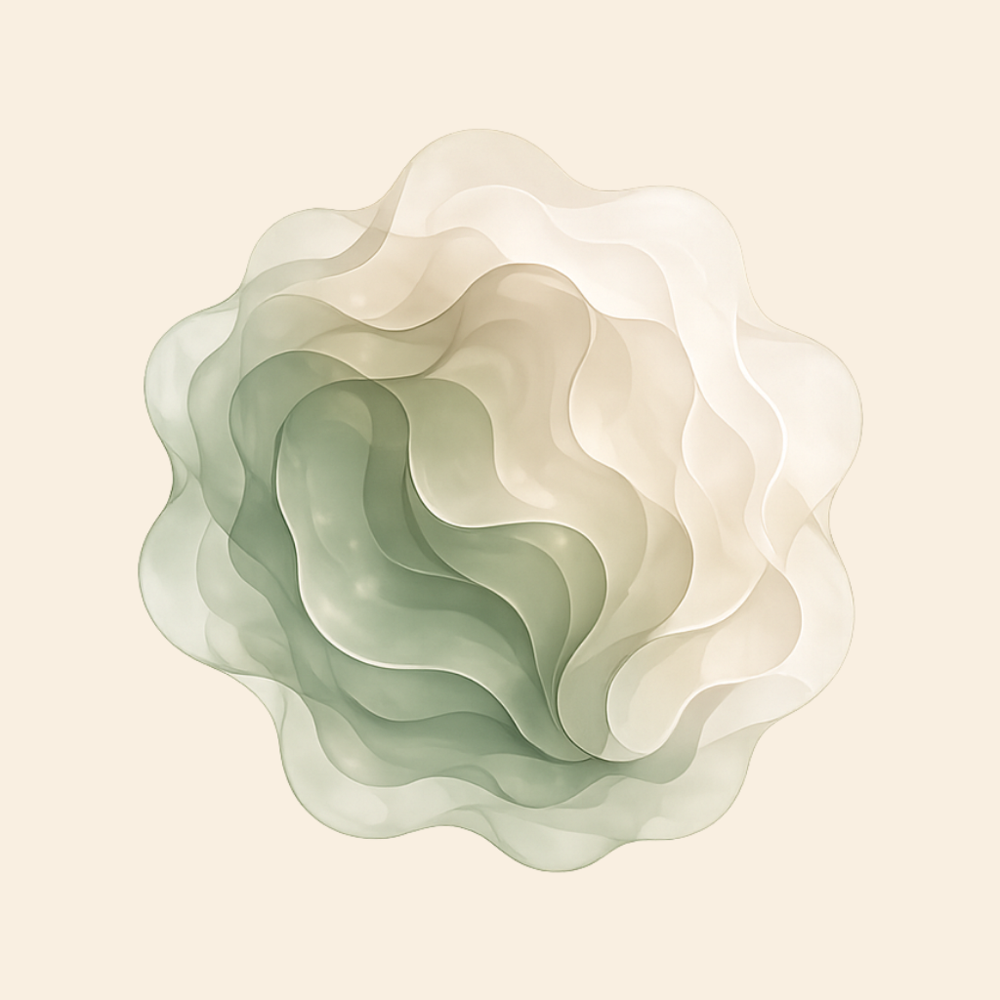

Application iOS · Régulation émotionnelle
Relief accompagne les moments de tension — stress, colère, surcharge mentale, conflit — à travers un parcours court, visuel et sensoriel qui aide à comprendre ce que l'on ressent, puis à agir.
Le concept
Au cœur de Relief se trouve une forme abstraite animée, reflet en temps réel de l'état intérieur de la personne. Au début d'une session, elle est dense, agitée et floue — à l'image d'une émotion encore confuse.
Au fil du parcours, à mesure que la personne met des mots sur ce qu'elle ressent, la forme se détend : elle devient plus lisible, plus douce, plus stable. Ce que l'on voit à l'écran raconte ce qui se passe à l'intérieur.
L'objectif n'est pas seulement de « se calmer », mais de transformer une émotion floue en compréhension claire, puis en action possible.

Le parcours
Chaque session s'ouvre sur un court échange de questions-réponses qui aide à préciser progressivement ce qui est ressenti. La personne peut ensuite prolonger l'expérience avec des activités adaptées à son besoin du moment.
Un dialogue guidé aide à identifier et nommer l'émotion ressentie, sans jugement, à son propre rythme.
Respiration, ancrage, journaling ou dessin : des exercices variés, à utiliser selon l'intensité du moment.
La forme animée devient plus douce et plus claire, marquant le passage de la confusion vers la clarté.
Bilan émotionnel
Relief conserve la trace des sessions passées dans une page de bilan émotionnel, organisée sous forme de calendrier.
En sélectionnant un jour, la personne retrouve le détail de la session menée : l'émotion identifiée, l'activité choisie et son évolution — de quoi prendre du recul sur ses propres tendances, semaine après semaine.
L'équipe
Relief est née pendant le Build Challenge organisé par Apple à l'occasion de la WWDC, portée par une équipe de quatre étudiants de l'École 42 Paris, pensée et développée en intégration native avec l'écosystème Apple.
École 42 Paris
École 42 Paris
École 42 Paris
École 42 Paris